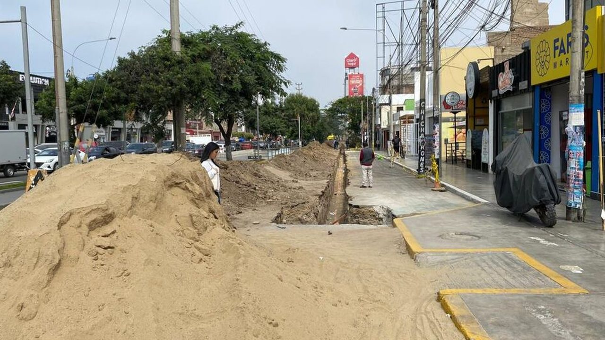

El papa León catorce tiene previsto llegar al Perú el miércoles 11 de noviembre de 2026 a las p. grados 8 de la Fuerza Aérea del Perú.



El papa León catorce tiene previsto llegar al Perú el miércoles 11 de noviembre de 2026 a las p. grados 8 de la Fuerza Aérea del Perú.
Ositrán recordó que los concesionarios son los responsables de operar, conservar y mantener la infraestructura aeroportuaria bajo su marco contractual.
El ministro de Economía y Finanzas, Elmer Cuba, destacó la demanda superior a los US21,000 dólares millones que recibió la emisión de bonos peruanos en el mercado internacional. La operación registró una demanda superior a los US21,000 dólares millones por parte de inversionistas internacionales.
Grasse Becerra respondió a Pamela López y aclaró cómo conoció a Christian Cueva en 2015, después de que la trujillana la mencionara en un comentario en redes sociales.
Algunas frutas contienen más del 85 por ciento de agua y contribuyen a cubrir las necesidades diarias de líquidos. Aproveche las frutas de temporada y combine distintos colores en su alimentación.
Cientos de vecinos de Santiago de Surco podrán expresar su fe y devoción al Señor de los Milagros este domingo 15 de noviembre. Por primera vez, el Nazareno Móvil realizará una parada especial en el distrito, donde recibirá un homenaje de la Municipalidad y de los fieles que se congregarán para acompañar su paso.
No bastaría con que las remuneraciones correspondan a un determinado año, sino que también deberá cumplirse con el pago para que puedan deducirse en el periodo.
El epicentro del temblor se ubicó a 15 kilómetros al oeste de Huánuco, en la provincia y departamento del mismo nombre, alcanzando una profundidad de 124 kilómetros.
El Colegio de Ingenieros advierte el colapso del dique La Mariposa en Piura El Colegio de Ingenieros advierte que la estructura no recibe mantenimiento desde el 2017 y fallaría por sobrevertido ante las crecidas del río.
Cada edición dura menos de dos minutos. En la web tienes el resumen de cada historia y el enlace directo al medio original para leerla completa.
Conoce Olfatecho →